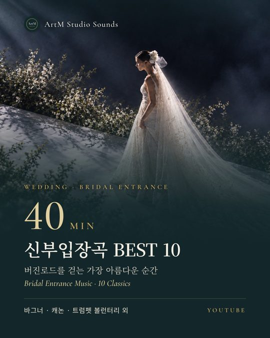
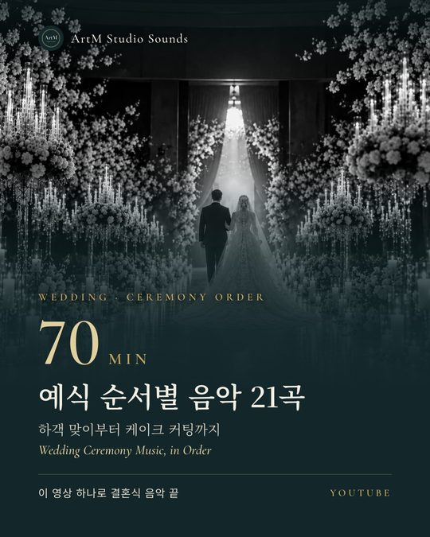
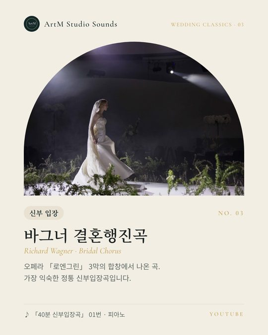
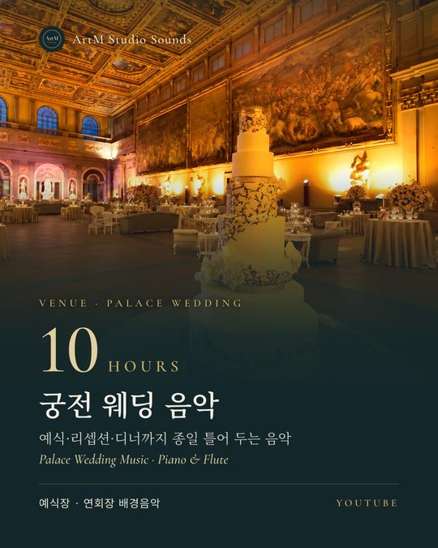
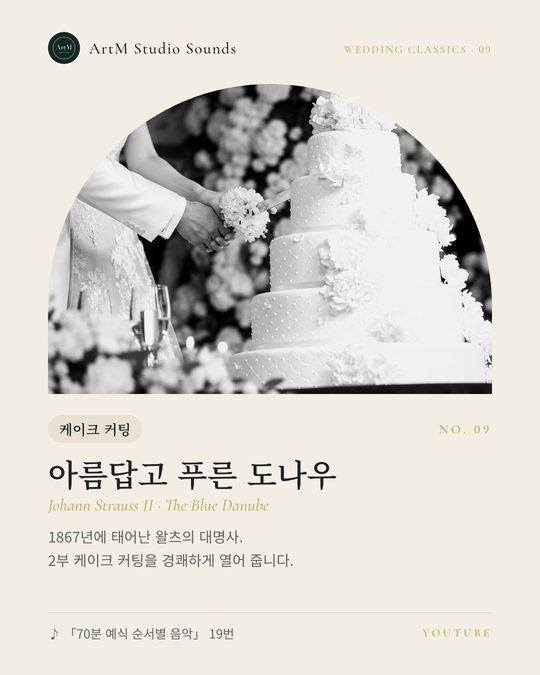
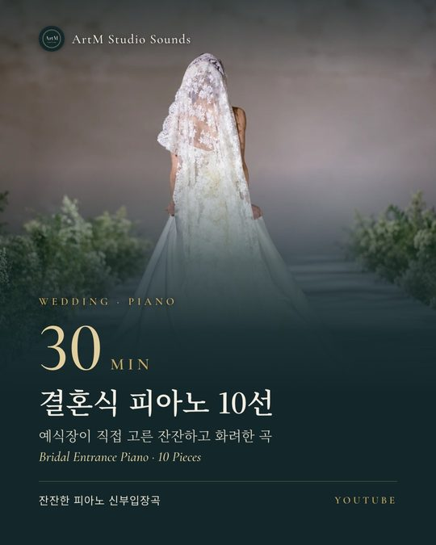
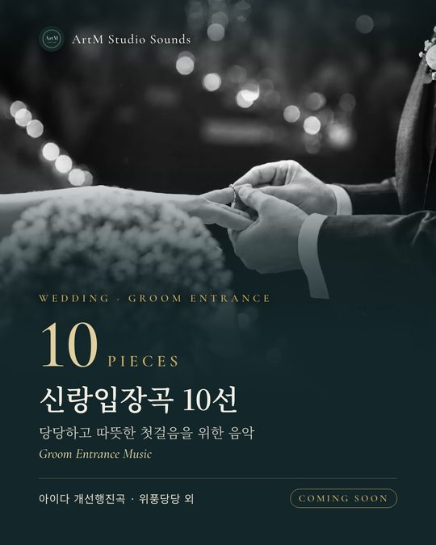
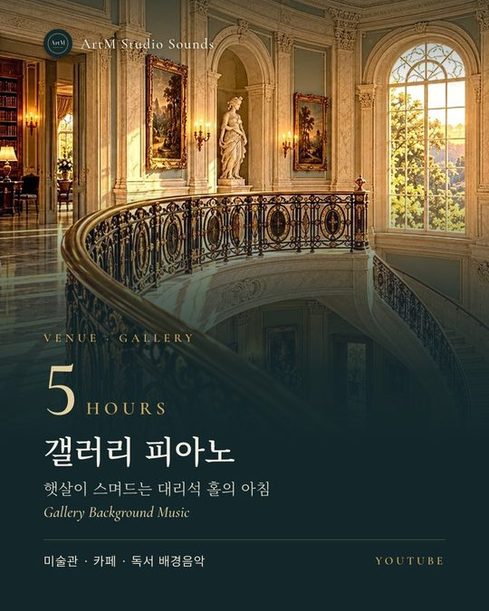
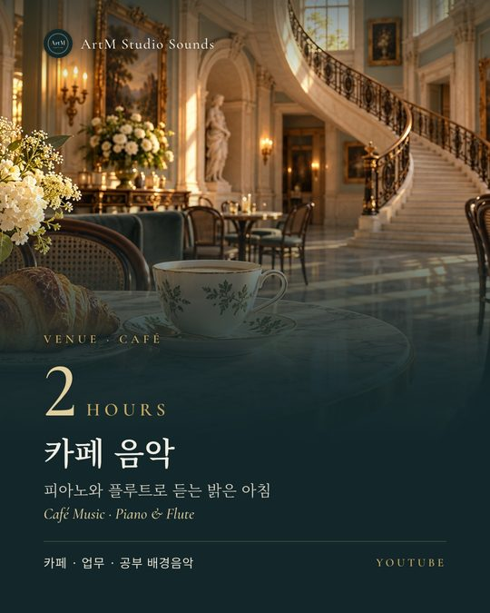

40분 min
40분 신부입장곡 | 결혼식 클래식 BEST 1040-Minute Bridal Entrance Music · Classical Best 10
버진로드를 걷는 가장 아름다운 순간을 위한 10곡Ten pieces for the walk down the aisle
연회·예식·갤러리·카페를 위한 클래식 음악.
오래 사랑받은 명곡을 직접 편곡하고 제작합니다.
Classical music for banquets, weddings, galleries & cafés —
timeless pieces, newly arranged and produced by us.
아트엠 스튜디오사운즈는 퍼블릭 도메인 클래식 명곡을 직접 편곡하고, 음원과 영상까지 제작하는 음악 스튜디오입니다. 예식장과 갤러리, 카페에서 그대로 틀어도 어울리도록 소리의 크기와 결을 다듬습니다. ArtM Studio Sounds arranges public-domain classical masterpieces and produces the recordings and videos in-house. Every track is shaped in tone and loudness so it can be played as-is in wedding halls, galleries and cafés.
신부·신랑 입장곡부터 하객 맞이, 케이크 커팅까지. 예식 순서에 맞춘 음악을 한 영상으로 준비했습니다.From the processional to the cake cutting — music arranged in ceremony order, ready in a single video.
튀는 곡 없이 처음부터 끝까지 잔잔하게. 식사와 감상, 작업 시간에 어울리는 긴 플레이리스트입니다.Calm from start to finish, with nothing that jumps out — long playlists for dining, browsing and focused work.
돌잔치처럼 순서가 있는 행사를 위해 장면마다 어울리는 곡을 골라 이어 붙였습니다.For events with a running order, such as a first-birthday party, we pick a fitting piece for every moment.
썸네일을 누르면 이 페이지에서 바로 재생됩니다.Tap a thumbnail to play it right here.
버진로드를 걷는 가장 아름다운 순간을 위한 10곡Ten pieces for the walk down the aisle
하객 맞이부터 케이크 커팅까지, 이 영상 하나로From greeting guests to the cake cutting, in one video
버진로드를 걷기 전, 가장 설레는 시간의 잔잔한 피아노Gentle piano for the hour before the aisle
예식·리셉션·디너까지 종일 틀어 두는 음악All-day music for the ceremony, reception and dinner
예식장이 직접 고른 잔잔하고 화려한 곡Gentle and radiant pieces chosen by wedding venues
하객 맞이부터 돌잡이, 배웅까지 이 영상 하나로From welcoming guests to the farewell, in one video
피아노·플루트 집중·독서·업무 음악Piano and flute for focus and reading
카페·갤러리·식사 배경음악For cafés, galleries and dining
집중·휴식 배경음악For focus and rest
신부입장곡과 겹치지 않는 당당한 10곡Ten confident pieces, none shared with the bridal set
하객 맞이부터 케이크 커팅까지 장면별 추천곡입니다. 「70분 예식 순서별 음악」에 이 순서 그대로 담았으니, 각 장면의 시간부터 바로 들어 보세요.Our picks for every moment, from welcoming guests to the cake. They play in exactly this order in our 70-minute ceremony video — jump straight to any moment.
하객들의 대화를 덮지 않는 잔잔한 곡이 좋아요.Calm music that never talks over your guests.
사티 짐노페디 1번 · 바흐 평균율 전주곡 C장조 · 드뷔시 아라베스크 1번 · 드뷔시 달빛 · 슈만 트로이메라이Satie Gymnopédie No. 1 · Bach Prelude in C · Debussy Arabesque No. 1 · Debussy Clair de lune · Schumann Träumerei
하객 입장은 생각보다 길어져요. 20~30분 분량을 넉넉하게 준비하세요.Guest arrival runs long — have 20–30 minutes ready.
▶ 0:00부터 듣기Listen from 0:00양가 어머니의 화촉 점화에 따뜻한 곡을.A warm piece as the two mothers light the candles.
엘가 사랑의 인사Elgar · Salut d’Amour
▶ 20:58부터 듣기Listen from 20:58밝고 당당한 행진곡으로 예식의 시작을 알려요.A bright, confident march opens the ceremony.
베르디 「아이다」 개선행진곡Verdi · Triumphal March from Aida
신랑 입장은 짧아요. 곡의 가장 힘찬 부분부터 시작하도록 맞춰 두세요.The groom’s walk is short — start from the strongest bar.
▶ 23:50부터 듣기Listen from 23:50분위기로 고르세요.Choose by mood.
정통 — 바그너 결혼행진곡
잔잔하게 — 파헬벨 캐논 · 쇼팽 녹턴 Op.9 No.2
화려하게 — 클라크 트럼펫 볼런터리 · 퍼셀 트럼펫 튠
경건하게 — 슈베르트 아베 마리아
낭만적으로 — 리스트 사랑의 꿈 3번 · 엘가 사랑의 인사Classic — Wagner Bridal Chorus
Gentle — Pachelbel Canon · Chopin Nocturne Op. 9 No. 2
Radiant — Clarke Trumpet Voluntary · Purcell Trumpet Tune
Reverent — Schubert Ave Maria
Romantic — Liszt Liebestraum No. 3 · Elgar Salut d’Amour
10곡 전체는 「40분 신부입장곡」에서 들어 보세요.Hear all ten in the 40-minute Bridal Entrance video.
▶ 25:30부터 듣기Listen from 25:30예식의 가운데는 조용하고 따뜻한 곡으로 이어 가요.Keep the heart of the ceremony quiet and warm.
맞절·혼인서약 — 파헬벨 캐논
성혼선언·주례사 — 헨델 라르고 (옴브라 마이 푸)
축가·축주 — 바흐/구노 아베 마리아 · 리스트 사랑의 꿈
부모님께 인사 — 쇼팽 녹턴 Op.9 No.2Vows — Pachelbel Canon
Declaration — Handel Largo (Ombra mai fu)
Song — Bach/Gounod Ave Maria · Liszt Liebestraum
Thanks to parents — Chopin Nocturne Op. 9 No. 2
바그너는 입장, 멘델스존은 행진이에요. 두 곡 모두 ‘결혼행진곡’이라 자주 헷갈려요.Wagner is for the entrance, Mendelssohn for the recessional — both are called “wedding march”.
멘델스존 결혼행진곡 → 베토벤 환희의 송가Mendelssohn Wedding March → Beethoven Ode to Joy
▶ 49:48부터 듣기Listen from 49:482부는 경쾌하게, 연회는 다시 잔잔하게.Lively for the second part, calm again for dinner.
재입장 — 라데츠키 행진곡
케이크 커팅 — 아름답고 푸른 도나우
연회 — 보케리니 미뉴에트 · 모차르트 아이네 클라이네 나흐트무지크Re-entrance — Radetzky March
Cake cutting — The Blue Danube
Dinner — Boccherini Minuet · Mozart Eine kleine Nachtmusik
라데츠키 행진곡은 하객 박수가 자연스럽게 따라와요.Guests naturally clap along to the Radetzky March.
▶ 56:35부터 듣기Listen from 56:35곡마다 40초씩 미리 들어 보는 릴스와 결혼식 음악 가이드를 인스타그램에 올리고 있어요.40-second previews of every piece and our wedding-music guides, on Instagram.

40분 신부입장곡40-min Bridal Entrance
70분 예식 순서별 음악70-min Ceremony Music
신부 입장 · 바그너 결혼행진곡Bride’s entrance · Wagner
10시간 궁전 웨딩10-hour Palace Wedding
케이크 커팅 · 아름답고 푸른 도나우Cake cutting · The Blue Danube
30분 결혼식 피아노30-min Wedding Piano
신랑입장곡 10선10 Groom Entrance Songs
5시간 갤러리 피아노5-hour Gallery Piano
2시간 카페 음악2-hour Café Music예식장과 매장에서 마음껏 틀어 주세요. 다만 음원과 영상을 다시 올리거나 파는 것은 안 됩니다.Please play our music freely at your venue. Re-uploading or reselling the audio or video is not allowed.
원곡은 저작권이 끝난 퍼블릭 도메인 작품이며, 편곡·음원·영상의 저작권은 아트엠 스튜디오사운즈에 있습니다. 일부 영상은 다른 연주자의 공개 라이선스 녹음을 사용하며, 이 경우 해당 영상 설명란의 안내를 따라 주세요. The original compositions are in the public domain. Copyright in the arrangements, recordings and videos belongs to ArtM Studio Sounds. A few videos use openly licensed recordings by other performers; for those, please follow the notice in each video's description.
음악 상담이나 협업 제안은 이메일로, 예식장·연회장 문의는 전화로 연락 주세요.Email us about music or collaborations; call for wedding and banquet venue inquiries.